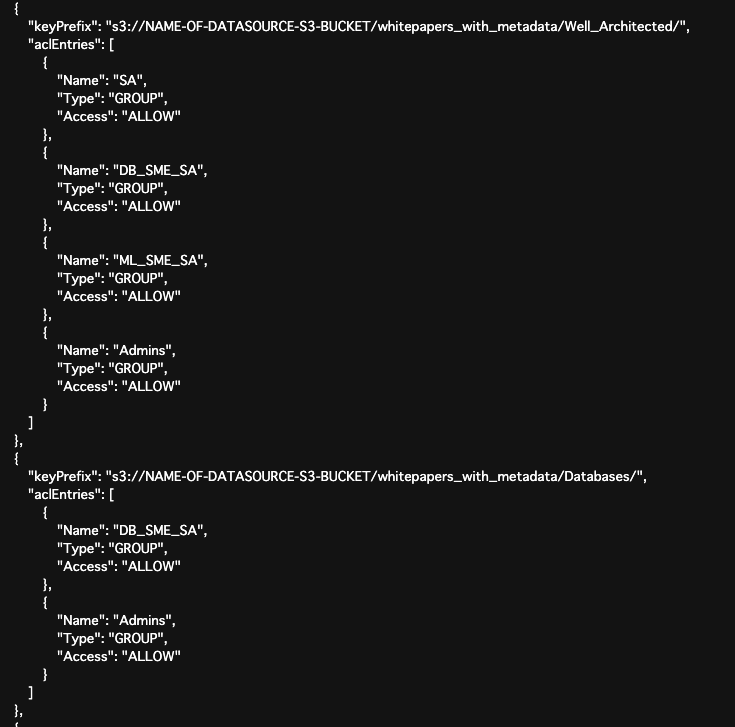
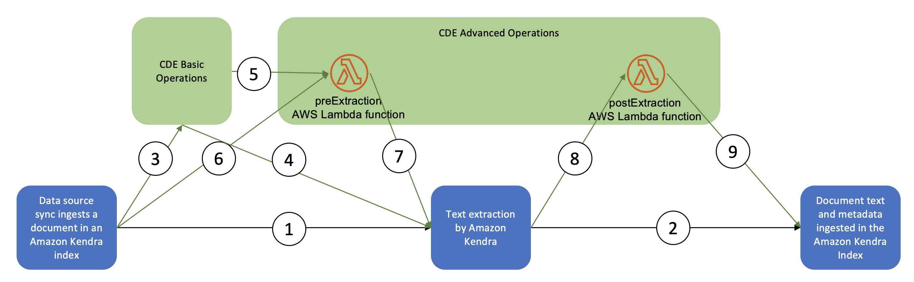

こちらのWorkshopを通して得た情報を整理する
データソース
以下のコネクタ、またはcsv形式で格納するFAQsからデータを抽出する（FAQの場合は手作業のため、コネクタが持つ自動同期的なものはない）
コネクタの種類
参考：https://aws.amazon.com/kendra/connectors/
Amazon Kendra native connectors
- S3
- RDS
- FSx
- Web Crawler: urlを指定
- Box
- Dropbox
- Google Drive
- Jira
- OneDrive
- SharePoint
- Github
- Teams
- MS Exchange
- MS Yammer
- Slack
FAQs
https://docs.aws.amazon.com/kendra/latest/APIReference/API_CreateFaq.html
ACL
Amazon Kendra には、S3 内のドキュメントのアクセスコントロールリスト (ACL) を指定するメカニズムが 2 つ用意されている
- 個々のドキュメントの場合、各ドキュメントに対応する ドキュメントメタデータ ファイルの AccessControlList フィールドを指定する
- フォルダレベルのACLを設定したACL設定ファイル を作成して、フォルダーまたは s3 プレフィックスを作成する
workshopでは2を実装。s3にACL設定ファイルを格納し、Kendraのデータソース読み取り元に設定する。 ACL設定ファイルの内容は、フォルダごとにどのユーザーまたはグループが閲覧可能かを記載。

ユーザーはCognitoによって管理する。 本WorkshopではACL設定ファイルでグループごとに権限を設定し、ユーザーごとのCognitoでグループを設定する。
Custom Document Enrichment

文書がたどる経路は、さまざまな CDE コンポーネントの有無によって異なる
- CDE が存在しない場合にたどる経路 — ステップ 1 と 2
- CDE 基本操作のみでたどる方法 — ステップ 3、4、2
- CDE の高度な操作のみでたどる方法 — ステップ 6、7、8、9
- CDE の基本操作と高度な操作が存在する場合の手順 — 手順 3、5、7、8、9
CDE の基本操作と高度な操作コンポーネントはオプショナル
PreExtractionはテキスト抽出前の処理で、主にファイル形式別に処理を変えるなどの目的で実装
- 音声の場合はtranscription、画像の場合はOCR
PostExtractionはテキスト抽出後の処理で、テキストからエンティティを抽出する目的で実装
最終的には、エンティティからfacetを自動作成し、検索エクペリ炎すを向上させる